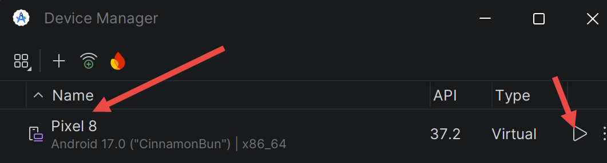

2. Chapitre 1 - Mise en place de l’environnement de travail
2.1. Installer les outils
- Node.js : télécharger et installer la version 22 (ou plus récente) depuis nodejs.org. Vérifier l’installation dans un terminal avec les commandes [node --version] et [npm --version]. Node.js n’est utile qu’au serveur [NestJS].
- [MySQL] 8 : il est installé au chapitre 2 avec l’outil Laragon, qui fournit aussi l’outil d’administration HeidiSQL.
- Postman : téléchargeable gratuitement sur postman.com, il sert à tester le serveur au chapitre 2.
- Visual Studio Code : facultatif, pour consulter le code du serveur [NestJS].
Pour le client, un seul outil suffit : [Android Studio]. Il n’est pas nécessaire d’installer un JDK (Java Development Kit) séparément : Android Studio embarque le sien, le JetBrains Runtime ([JBR]), qui sert à exécuter [Gradle], l’outil de construction des projets Android. Le compilateur Kotlin, lui, n’est pas à installer non plus : c’est un plugin de Gradle, téléchargé automatiquement à la première construction du projet.
2.1.1. Android Studio et le SDK Android
[Android Studio] se télécharge gratuitement à l’adresse [https://developer.android.com/studio]. Au premier lancement, l’assistant propose une installation standard : l’accepter. Il télécharge alors le SDK Android (les bibliothèques de la plateforme, les outils de compilation et l’émulateur).

Ce document a été testé avec Android Studio Quail 4 (2026.1.4). L’écran d’accueil donne accès, par le lien [More Actions], au [SDK Manager] et au [Virtual Device Manager], utilisés plus loin :

- le [SDK Manager] installe et met à jour les composants du SDK Android. Onglet [SDK Platforms] : vérifier qu’une plateforme Android récente est installée - le projet de ce document est compilé pour l’API 37 (Android 17). Si elle manque, Gradle la télécharge de lui-même lors de la première construction ;
- onglet [SDK Tools] : vérifier que [Android SDK Build-Tools], [Android SDK Platform-Tools] (qui contient l’outil [adb]) et [Android Emulator] sont cochés.

Le SDK est installé par défaut dans le dossier [%LOCALAPPDATA%\Android\Sdk] (sous Windows). Deux de ses sous-dossiers contiennent des outils en ligne de commande utilisés dans ce document : [platform-tools] (l’outil [adb], qui pilote un téléphone ou un émulateur depuis l’ordinateur) et [emulator]. On peut ajouter ces deux dossiers au [PATH] du système pour taper simplement [adb] dans un terminal.
2.2. Créer un projet Android avec Android Studio
Le code du client est fourni avec ce document (dossier [rdvmedecins-kotlin-client]). Il a été créé à partir du modèle de projet [Empty Activity] d’Android Studio, puis complété. Voyons d’abord comment ce projet de départ est créé : c’est l’équivalent de la commande [flutter create] du cours Flutter. Dans l’écran d’accueil d’Android Studio, cliquer sur [New Project] :

- dans la catégorie [Phone and large screens], choisir le modèle [Empty Activity]. C’est le modèle « Jetpack Compose » : une application à un seul écran dont l’interface est décrite en Kotlin. Le modèle [Empty Views Activity], lui, utilise l’ancien système de vues décrites en XML, que ce document n’utilise pas ;
- cliquer sur [Next].

- [Name] : le nom de l’application, affiché sous son icône sur le téléphone. Pour ce document : [RdvMedecins] ;
- [Package name] : l’identifiant unique de l’application, sous la forme d’un nom de domaine inversé. Pour ce document : [fr.rdvmedecins.client]. C’est aussi le package Kotlin de base du code source ;
- [Save location] : le dossier du projet ;
- [Minimum SDK] : la plus ancienne version d’Android acceptée. Le client de ce document demande l’API 26 (Android 8.0), qui couvre la quasi-totalité des téléphones en service ;
- [Build configuration language] : le langage des fichiers de configuration de Gradle. [Kotlin DSL (build.gradle.kts)] est le choix recommandé : la configuration de la construction s’écrit, elle aussi, en Kotlin ;
- [Finish] crée le projet. Android Studio lance alors une première « synchronisation Gradle » : il télécharge Gradle lui-même, le plugin Android, le compilateur Kotlin et les bibliothèques déclarées par le projet. Cela peut durer plusieurs minutes la première fois.
Le projet créé a l’arborescence suivante (les fichiers que le client de ce document a modifiés ou ajoutés sont étudiés au chapitre 4) :
[Gradle] joue ici le rôle que jouaient [npm] pour un projet Node.js ou [flutter]/[pub] pour le projet Flutter : il télécharge les dépendances, compile le code et produit l’application installable, un fichier .apk. Les scripts [gradlew] (Linux, macOS) et [gradlew.bat] (Windows), le « wrapper » Gradle, téléchargent au besoin la version exacte de Gradle attendue par le projet (indiquée dans [gradle/wrapper/gradle-wrapper.properties]) : aucune installation globale de Gradle n’est nécessaire.
2.3. Ouvrir le projet du client
Si vous avez téléchargé les codes de ce document, le client se trouve dans le dossier [rdvmedecins-kotlin-client]. Pour l’ouvrir : écran d’accueil d’Android Studio, bouton [Open], puis sélectionner ce dossier (celui qui contient [settings.gradle.kts]). Android Studio lance la synchronisation Gradle décrite plus haut. Le projet s’affiche ensuite dans la vue [Project] (à gauche) ; la vue [Android], proposée par défaut, regroupe les fichiers par nature (manifests, kotlin+java, assets, res) plutôt que par dossier.
Le projet peut aussi être construit sans ouvrir Android Studio, en ligne de commande. Dans un terminal ouvert dans le dossier [rdvmedecins-kotlin-client] :
- la première ligne (PowerShell) indique à Gradle le JDK à utiliser : celui d’Android Studio. Inutile si la variable [JAVA_HOME] est déjà définie sur le poste ;
- la seconde lance la tâche Gradle [assembleDebug], qui compile le projet et produit une application de « débogage » installable sur un émulateur ou un téléphone.
Lors de la première construction, Gradle télécharge tout ce dont il a besoin puis affiche la liste des tâches qu’il exécute :
- [compileDebugKotlin] : la compilation du code Kotlin en bytecode Java ;
- [dexBuilderDebug] : la conversion de ce bytecode au format DEX, le format exécuté par la machine virtuelle d’Android ([ART], Android Runtime) ;
- [packageDebug] : l’assemblage du fichier [app/build/outputs/apk/debug/app-debug.apk], l’application installable.
2.4. Créer un émulateur Android
À défaut de téléphone, on teste l’application sur un émulateur Android : un téléphone virtuel qui s’exécute dans une fenêtre de l’ordinateur. Cette section reprend celle du cours Flutter.
[Prérequis] : la virtualisation doit être activée dans le [BIOS] de l’ordinateur et, sous Windows, la fonctionnalité [Plateforme de l’hyperviseur Windows] doit être cochée ([Panneau de configuration / Programmes / Activer ou désactiver des fonctionnalités Windows]), ce qui demande un redémarrage. Sans cela, l’émulateur ne démarre pas ou reste très lent.
Ouvrir le [Device Manager] d’Android Studio : [More Actions / Virtual Device Manager] depuis l’écran d’accueil, ou [Tools / Device Manager] lorsqu’un projet est ouvert.

Cliquer sur [Create Device], choisir un modèle (par exemple [Pixel 8]) puis [Next]. Choisir une image système Android récente pour le processeur [x86_64] et la télécharger avec le lien [Download] situé à côté, puis [Next] et [Finish].


Démarrer l’émulateur avec le bouton [Play] du [Device Manager] :

On peut aussi le démarrer depuis un terminal. La première commande liste les émulateurs créés, la seconde démarre l’un d’eux :
Attendre que l’écran d’accueil d’Android soit affiché dans la fenêtre de l’émulateur (le premier démarrage peut durer plusieurs minutes), puis vérifier que l’outil [adb] le voit :
[Remarque] : si [adb devices] affiche [offline] au lieu de [device], l’émulateur n’a pas fini de démarrer, ou [adb] est dans un état incohérent. Attendre l’écran d’accueil, puis, au besoin, redémarrer [adb] avec les commandes [adb kill-server] puis [adb start-server]. Si le problème persiste, vérifier avec [where.exe adb] qu’aucun autre [adb], d’une version différente (celui d’un ancien SDK, par exemple), ne se trouve dans le [PATH].
2.4.1. Préparer le téléphone Android
Pour exécuter l’application sur un vrai téléphone Android, celui-ci doit accepter d’être piloté depuis l’ordinateur :
- activer les options pour les développeurs : ouvrir [Paramètres / À propos du téléphone] puis appuyer plusieurs fois (7 en général) sur [Numéro de build] jusqu’à ce que le téléphone indique que vous êtes développeur. Les intitulés exacts varient selon le fabricant ;
- activer le [Débogage USB] dans les [Options pour les développeurs] (menu ajouté par l’étape précédente) ;
- brancher le téléphone à l’ordinateur avec un câble USB qui transfère des données (pas seulement de la charge) et accepter, sur le téléphone, la demande d’autorisation du débogage USB. Sous Windows, si le téléphone n’est pas reconnu, installer le pilote USB de son fabricant (« OEM USB drivers », cf. [https://developer.android.com/studio/run/oem-usb]) ;
- vérifier que le téléphone apparaît dans la liste affichée par [adb devices].
Le téléphone accèdera au serveur [NestJS] soit par l’adresse IP de l’ordinateur sur le réseau local, soit par le câble USB grâce à la commande [adb reverse] : ces réglages sont décrits au chapitre 5.